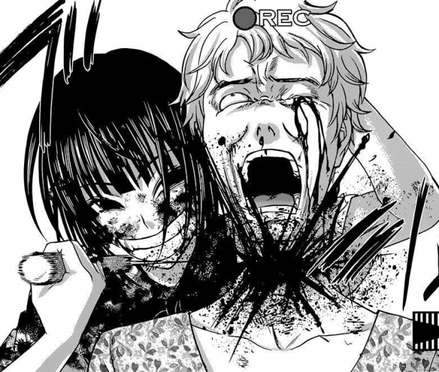
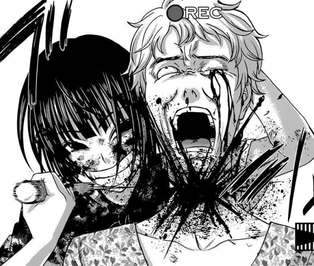

DEADTUBE
Tomohiro Machiya, a member of the Film Research Club, is called by school idol, Mai Mashiro, to film her.
After he films her swimming, she asks him to film her continuously for two days and he agrees.
Everything seems normal until Mashiro kills her "boyfriend" who was a former bully and delinquent, while Machiya films it all.
He then finds out Mashiro is uploading videos to a website called Dead Tube, where users post content and are rewarded
with money based on the number of views they get. The users are encouraged to post videos, but there is a catch:
the person or people whose video gets the fewest views has to pay for the expenses and the crimes of all the other participants.
As Machiya gets dragged deeper and deeper into the world of Dead Tube, he starts questioning his ambiguous relationship
with Mashiro and the dark feelings lying within himself.

 
